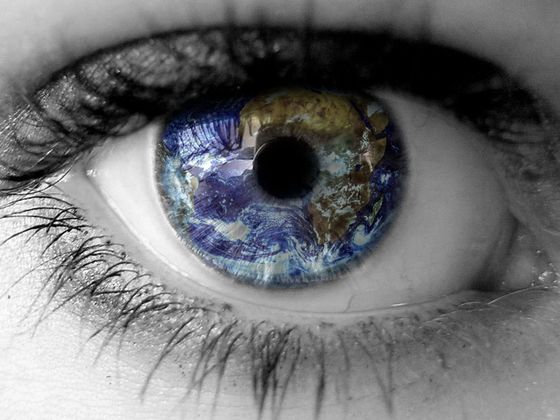

See The World - Gomez
01.22.17

One Christmas I bought my son a t-shirt that said, "travel is fatal to prejudice, bigotry and narrow mindedness.” It was light blue with red print. It always reminds me of my favorite basketball jerseys from the 5th grade when I dabbled in 6 v 6 basketball. Despite my lack of height, I managed to master the fake, dribble, dribble, layup. However, I’m fairly certain that move (as silky smooth as it was) wouldn’t have translated to the high school game had I kept playing.
Ok, back to the shirt… When I bought it, it was a “I’ve bought my daughters more stuff, so my son still needs another present to even it out” type of situation. As I eye balled it, I determined that it was kinda cool…he'll like the words…it reminds me of a (Gomez) song I like…its colors remind me of my 6th grade jersey when I was a baller...and they’ll gift wrap it for me. Done deal!
Enter song #22. Fast forward to today. I loaded up a podcast to fuel my Sunday run. During it, the interviewer said the the phrase “see the world” and I immediately began to think about the decade old Gomez song. Its lyrics permeated through my thoughts as I hammered out my regular route, eventually focusing on the tune more than the podcast. This was the song that sparked the purchase of Armond’s final present that snowy December day.
It is important to see the world. Regardless if you view it through books or experience. We must seize the opportunity to open our minds. To experience another culture can be eye opening and offer persepectve.
"See the world, find an old fashioned girl
And when all's been said and done
It's the things that are given, not won
Are the things that you earned”
I love the this verse. Think about it: what’s important to you? A thank you note, a picture of an experience, a kind word. We all likely have a special trophy or memento that gives us joy to recall, but chances are they don’t hold a candle to a touching interpersonal experience that allowed us to grow.
Check out this bluesy rock band from the UK! Gomez flies under the radar in radio air time, but is well reviewed. One Christmas I bought my son a t-shirt that said, "travel is fatal to prejudice, bigotry and narrow mindedness.” It was light blue with red print. It always reminds me of my favorite basketball jerseys from the 5th grade when I dabbled in 6 v 6 basketball. Despite my lack of height, I managed to master the fake, dribble, dribble, layup. However, I’m fairly certain that move (as silky smooth as it was) wouldn’t have translated to the high school game had I kept playing.
Ok, back to the shirt… When I bought it, it was a “I’ve bought my daughters more stuff, so my son still needs another present to even it out” type of situation. As I eye balled it, I determined that it was kinda cool…he'll like the words…it reminds me of a (Gomez) song I like…its colors remind me of my 6th grade jersey when I was a baller...and they’ll gift wrap it for me. Done deal!
Enter song #22. Fast forward to today. I loaded up a podcast to fuel my Sunday run. During it, the interviewer said the the phrase “see the world” and I immediately began to think about the decade old Gomez song. Its lyrics permeated through my thoughts as I hammered out my regular route, eventually focusing on the tune more than the podcast. This was the song that sparked the purchase of Armond’s final present that snowy December day.
It is important to see the world. Regardless if you view it through books or experience. We must seize the opportunity to open our minds. To experience another culture can be eye opening and offer persepectve.
"See the world, find an old fashioned girl
And when all's been said and done
It's the things that are given, not won
Are the things that you earned”
I love the this verse. Think about it: what’s important to you? A thank you note, a picture of an experience, a kind word. We all likely have a special trophy or memento that gives us joy to recall, but chances are they don’t hold a candle to a touching interpersonal experience that allowed us to grow.
Check out this bluesy rock band from the UK! Gomez flies under the radar in radio air time, but is well reviewed.